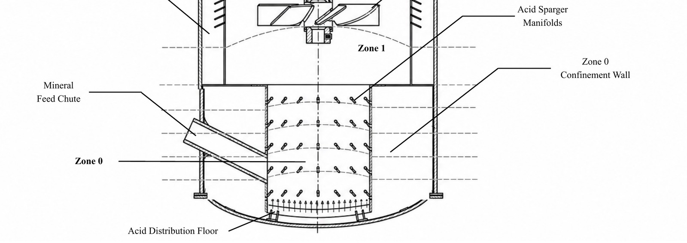

The reactor
One vertical vessel with four zones, built to give every grain the time it needs in the acid. It is modeled, not built.
Acid enters at the bottom, so the pH is lowest at the base and rises toward the top. The labels say acid; in this design the acid is carbonic acid, which is CO₂ dissolved in water. Tap a number to jump to that feature.
Described in the U.S. provisional application.
An input or result in the cost model, not measured.
Follows from the physics, but its size is unknown.
A design intent with no data behind it yet.

Acid jets
Acid enters as jets from a floor manifold and five rows of wall nozzles. A fast jet shears the grain surface and renews the acid there.

Classification
Upward flow holds coarse, unreacted grains low and lets finer, partly dissolved grains rise. Bed height sets how long a grain stays.

Impeller lift
An impeller hung from the roof, with nothing beneath it, picks up rising grains and throws them into Zone 1.

Hollow baffles
Hollow units on the wall with a louvered face. The liquid meets the short wall first, and the unit holds it longer to catch fines and metals.

pH staging
Fresh acid enters at the bottom, so the pH steps up zone by zone toward discharge. On the fresh-water route the cost model puts discharge near pH 6.75.
Nothing is measured yet
One page lists what the model assumes and the bench tests that would check it.
Start at the bottom.
Zone 0 is where the vessel differs most from a stirred tank, and it has the most to read.
Let's talk.
I'm always glad to talk chemistry, carbon removal, or anything OlivAir related.